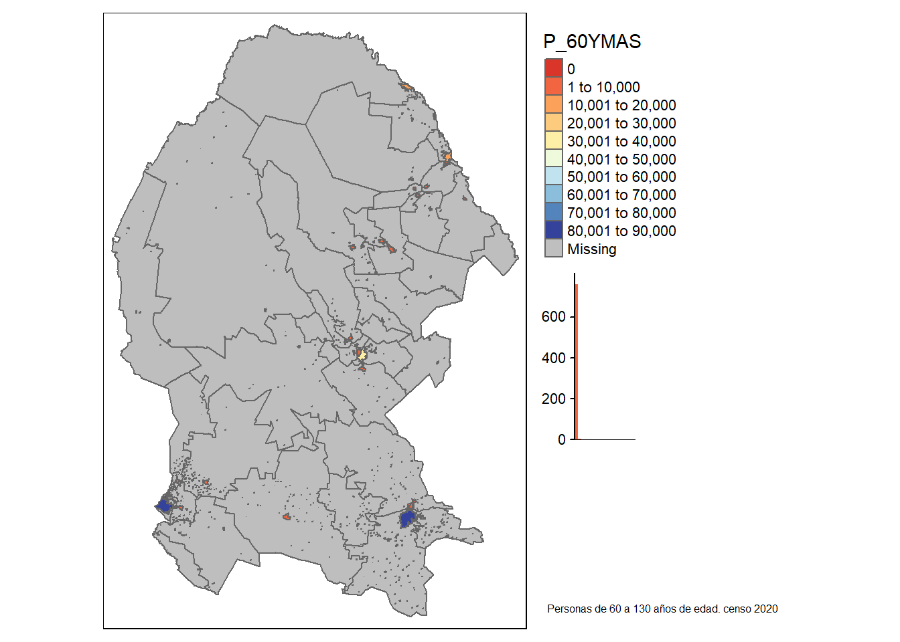

Capítulo 5 Variable cartografiada por localidad
El siguiente texto ejemplifica la ejecución del código seleccionando la variable que se quiere estudiar
’—
title: “Variable cartografiada por localidad”
author: “Claudia Guerrero S”
date: “27/02/2021”
output: html_document: df_print: paged pdf_document: default
params:
’#=======================#
’# Render Function: #
’#=======================#
estilo: label: “Estilo” value: jenks input: select choices: [pretty,equal,quantile,sd,kmeans,jenks,fisher]
varname: label: “Variable” value: P_60YMAS input: select choices: [POBTOT,POBFEM,POBMAS,P_0A2,P_0A2_F,P_0A2_M,P_3YMAS,P_3YMAS_F,P_3YMAS_M,P_5YMAS,P_5YMAS_F,P_5YMAS_M,P_12YMAS,P_12YMAS_F,P_12YMAS_M,P_15YMAS,P_15YMAS_F,P_15YMAS_M,P_18YMAS,P_18YMAS_F,P_18YMAS_M,P_3A5,P_3A5_F,P_3A5_M]
entidad: label: “Entidad Federativa” value: Jalisco input: select choices: [Aguascalientes,Baja California,Baja California Sur,Campeche,Coahuila de Zaragoza,Colima,Chiapas,Chihuahua,Ciudad de México,Durango,Guanajuato,Guerrero,Hidalgo,Jalisco,México,Michoacán de Ocampo,Morelos,Nayarit,Nuevo León,Oaxaca,Puebla,Querétaro,Quintana Roo,San Luis Potosí,Sinaloa,Sonora,Tabasco,Tamaulipas,Tlaxcala,Veracruz de Ignacio de la Llave,Yucatán,Zacatecas]
’—
5.1 Importación de datos cartográficos
Censo de Población y Vivienda 2020 2020 2.65 GB https://inegi.org.mx/contenidos/productos//prod_serv/contenidos/espanol/bvinegi/productos/geografia/marcogeo/889463807469_s.zip Ficha de información https://inegi.org.mx/app/biblioteca/ficha.html?upc=889463807469
Se descarga y se descomprime localmente y de ahí se obtiena la capa de la localidad
#La ruta para el mapa de México se toma del Marcogeostadístico nacional
rutam<-"D:/Documents/Claudia/Midropbox/Investigacion y escritos/Marcogeoestadisticonacional/mg_sep2019_integrado/conjunto_de_datos"
rutamc<-"D:/Documents/Claudia/Midropbox/Investigacion y escritos/Censo2020/"
geoentidades<-read.csv(paste0(rutamc,"marcogeoentidad.csv"),header=TRUE, sep=",",encoding="UTF-8")
rutamc<-"D:/Documents/Claudia/Midropbox/Investigacion y escritos/Censo2020/889463807469_s"
codent<-substr(geoentidades$NUM_ENT,1,2)
codent<-sprintf("%02d%s", as.numeric(gsub("[^0-9]+", "", codent)), gsub("[0-9]+", "", codent))
geoentidades$COD_ENT<-codent
geoentidades <-subset(geoentidades,geoentidades$NOM_ENT %in% c(params$entidad))
rutamc<-"D:/Documents/Claudia/Midropbox/Investigacion y escritos/Censo2020/889463807469_s/"
filename<-geoentidades$ARCHENT
filemun<-paste0(geoentidades$COD_ENT,"mun")
fileloc<-paste0(geoentidades$COD_ENT,"l")
url<-paste0(rutamc,filename,".zip")
temp2 <- tempfile()
unzip(url, exdir = temp2)
rut<-file.path(temp2)
rutamun<-paste0(rut,"/conjunto_de_datos")
basemapamun <- readOGR(rutamun,filemun, use_iconv = TRUE, encoding = "latin1")## OGR data source with driver: ESRI Shapefile
## Source: "C:\Users\Claudia.Guerrero\AppData\Local\Temp\RtmpmWrTxw\file1d38339c79cf\conjunto_de_datos", layer: "05mun"
## with 38 features
## It has 4 fieldsbasemapaloc <- readOGR(rutamun,fileloc, use_iconv = TRUE, encoding = "latin1")## OGR data source with driver: ESRI Shapefile
## Source: "C:\Users\Claudia.Guerrero\AppData\Local\Temp\RtmpmWrTxw\file1d38339c79cf\conjunto_de_datos", layer: "05l"
## with 836 features
## It has 6 fieldstm_shape(basemapamun) +
tm_polygons(col = "MAP_COLORS",
palette = "Spectral")+
tm_shape(basemapaloc) +
tm_polygons(col = "MAP_COLORS",
minimize = TRUE)rutvar<-"D:/Documents/Claudia/Midropbox/Investigacion y escritos"
variablescensales<-read.csv(paste0(rutvar,"/Censo2020/","variablescensales.csv"),header=TRUE, sep=",",encoding="UTF-8")5.2 Importación de datos censales
En el sitio del INEGI se encuentran los resultados del CENSO 2020 para cada una de las entidades de la población https://www.inegi.org.mx/programas/ccpv/2020/default.html#Datos_abiertos
Principales resultados por localidad (ITER)
Estados Unidos Mexicanos 2020
https://www.inegi.org.mx/contenidos/programas/ccpv/2020/datosabiertos/iter/iter_00_cpv2020_csv.zip
Para recuperar los datos censales a nivel estatal:
En el archivo se registra la población total de la entidad cuando en el nombre de la localidad aparece la leyenda “Total de la Entidad”
#url<-paste0("https://www.inegi.org.mx/contenidos/programas/ccpv/2020/datosabiertos/iter/iter_00_cpv2020_csv.zip")
#temp <- tempfile()
#temp2 <- tempfile()
#download.file(url, temp)
#unzip(zipfile = temp, exdir = temp2)
#rut<-file.path(temp2)
censonal<- censonalo
names(censonal)[1] <- "CVE_ENT"
#Datos de toda la entidad uso del campo nom_loc para identificar los valores de las variables a nivel estatal
latmx="México"
codent<-substr(censonal$CVE_ENT,1,2)
codent<-sprintf("%02d%s", as.numeric(gsub("[^0-9]+", "", codent)), gsub("[0-9]+", "", codent))
codmun<-substr(censonal$MUN,1,3)
codmun<-sprintf("%03d%s", as.numeric(gsub("[^0-9]+", "", codmun)), gsub("[0-9]+", "", codmun))
codloc<-substr(censonal$LOC,1,4)
codloc<-sprintf("%04d%s", as.numeric(gsub("[^0-9]+", "", codloc)), gsub("[0-9]+", "", codloc))
censonal$CVEGEO<-paste0(codent,codmun,codloc)
#censonal <-subset(censonal,censonal$NOM_LOC %in% c("Total del Municipio"))
censonal <-subset(censonal,censonal$NOM_ENT %in% c(params$entidad))
#Ahora el mapa tiene el dato de las 198 variables del censo
#Conversión a número
cols = c(11:231)
censonal[,cols] %<>% lapply(function(x) as.integer(as.character(x)))
basemapa<-merge(basemapaloc,censonal, by="CVEGEO", all.x =TRUE)
municipios<-censonal$NOM_MUN
data<- unique(municipios)
data(list=params$municipio)5.3 Variables de la localidad en la entidad
P_60YMAS Población de 60 años y más
El estilo pretty redondea y divide en números enteros siempre que sea posible y los espacia uniformemente.

5.4 Video
Este proceso se detalla en el siguiente video